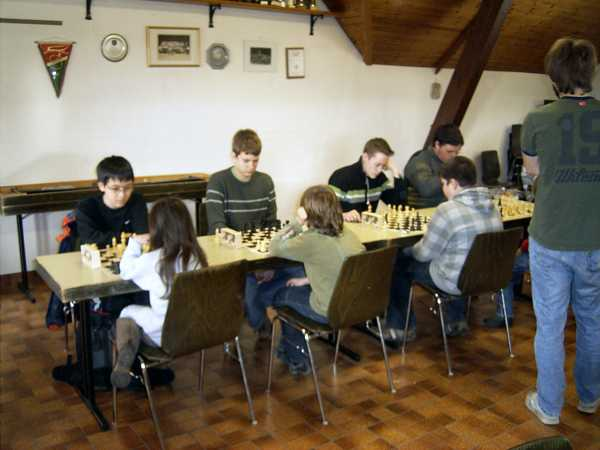
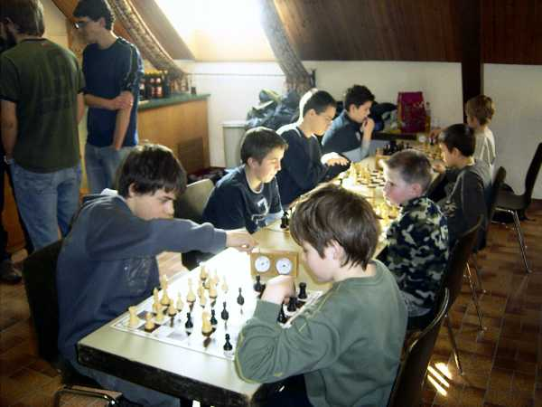
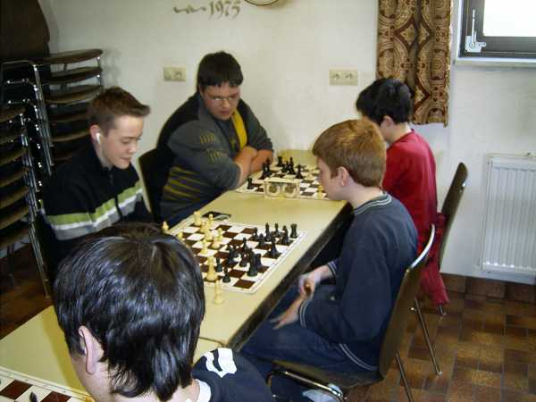
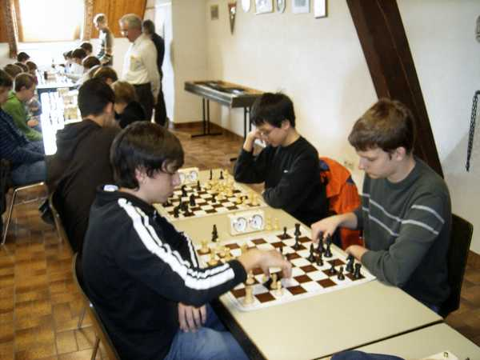

Die erste Mannschaft in Aktion.

Auch die zweite kämpfte tapfer.

Die dritte mit überraschenden Erfolgen.

Ein ungleiches Paar.

"Lokalderby": Erste gegen zweite (Brett 1 und 2)

"Lokalderby": Erste gegen zweite (Brett 3 und 4)

Die dritte gewann mit dem 1. Platz den Blumentopf in der Gruppe B.

Und hier die im wahrsten Sinne des Wortes strahlenden Sieger der Gruppe A.